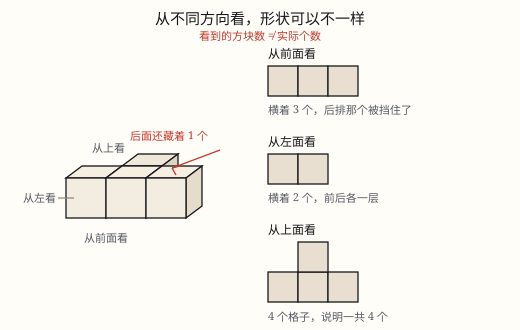

观察物体
同一个物体，从前面、左面、上面看，形状往往不同；看到的方格数也不等于小正方体的个数，被挡住的看不见。
| 所属主题 | 立体图形 |
|---|---|
| 所属模块 | 图形与几何 |
| 课标学段 | 第三学段（5~6年级） |
| 核心素养 | 空间观念几何直观推理意识 |
教材定位
人民教育出版社《2024年版》
横跨三上第 1 单元「观察物体」与五上第 1 单元「观察简单组合体」：从不同位置观察物体。
课标要求
| 图形与几何·图形的认识与测量 | 能根据具体事物、照片或直观图辨认从不同角度观察到的简单物体。 印刷第 30 页 行为动词：了解 |
|---|---|
| 图形与几何·图形的认识与测量 | 对于简单物体，能辨认不同方向（前面、侧面、上面）的形状图（例34）。 印刷第 33 页 行为动词：了解 |
说明
把一个物体放在桌上，人不动，只换个位置看：坐在它前面看到的，绕到左边看到的，站到椅子上往下看到的，常常是三个不一样的样子。同一个物体，从不同方向观察，看到的形状可能不同；也有相同的时候，比如一个正方体，三个方向看都是正方形。
先把三个方向的名字定清楚。前面：正对着自己、眼睛平视的那一面；左面：从物体的左边看过去；上面：从上往下看。看的时候视线要正对着那个面，斜着看会把形状看歪。
把看到的形状画下来，办法很朴素：看到几个小正方形，就画几个小正方形，按它们上下左右的位置摆好。这张图只记录轮廓，不记录远近——离你三格远的面，和贴着你一格的面，画出来一样大。
这里有个最容易踩的坑：看到的方格数，不等于小正方体的个数。从前面看，前后两个方块正好对齐时，后面那个被前面的严严实实挡住，一个方格也露不出来。所以前面数出 3 个方格，实际可能用了 4 块、5 块。
反过来，只给一个方向的形状，也确定不了物体。同样「从前面看是 3 个方格」，可能是 1 层 3 块，也可能后面还藏着 1 块。要把物体说准，三个方向得一起看。
使用场景
搭积木和学具：同桌只给你三张「看到的形状」，你照着还原出那个物体，这是观察物体的基本功。
相机与无人机：同一个小区，站在地面平视拍一张，无人机升到半空俯拍一张，两张照片的构图完全不同，因为视角换了。
看图纸：家具、零件的图纸要画正面、侧面、上面三张图，工人照图加工，少一个方向就可能做错。
码货与收纳：仓库把纸箱码成几层，从正面看是几排几层，从上面看是几行几列，盘货时两个方向都要数。
注意点
视线要正对那个面。斜着看，方块会「变扁」，画出来的格子比例就不对。
三个方向分开画三张图。不能把正面看到的和上面看到的叠在一张图里。
从左面看和从右面看，图是反的。同一排的东西，从左看左边那个靠前，从右看就变成右边那个靠前。
数格子时别顺手数方块。格子只记录看得见的部分，被挡住的方块在图上不留痕迹。
「从上面看」不是「从后面看」。俯视看到的是宽和深，得到一张平面图；从后往前看，看到的仍是宽和高。
为什么是这样

图 1：三个方向各看到一张图，格子数一张是 3、一张是 2、一张是 4，而方块其实只有 4 个
算理推导
三个方向量的东西不一样：从前面看量到的是宽和高，从上面看量到的是宽和深，从左面看量到的是深和高。它们正好对应长方体的三组棱，所以三张图一般各不相同。
为什么被挡住就看不见？视线是直线。前后两个方块对齐时，前面那个把后面那个的正面完全遮住，视线到不了后面那块，图上自然没有它。
于是有了一条规则：从前面看，每一列只画一个方格，方格的高度等于这一列最高的层数——比它矮的都被同列更高的方块挡住了。看图 1：底面一排 3 个，中间那个后面还藏着 1 个，可前面看到的仍然只有 3 个方格。
从上面看正好相反：往下压扁，每一竖井只画一个方格，方格数等于这个物体在地面上占的格子数。图 1 的地面上占了 4 格，所以俯视图是 4 个方格，摆成一个「T」形。
从左面看，前后两排压成一列，看到 2 个方格。三张图合起来才把这个物体说清楚：前面 3 格、上面 4 格、左面 2 格，而方块只有 4 个。
动手实验
拿 4 个同样大的小正方体（骰子、方糖都行），摆成「底下一排 3 个，中间那个的正后方再放 1 个」。先蹲下平视正面，画下从前面看到的形状；再绕到左边画第二张；最后站到椅子上从上往下画第三张。三张图摆在一起，你会发现它们完全不同。接着把后面那一块挪到最右边，重新画一遍——只有「从上面看」那张变了，「从前面看」一点没变。这一挪就说明了：光凭一张图，还原不出物体。
按场景的例题
例 1（场景：校园生活） 数学课上的学具
讲台上用 4 个小正方体搭成一个物体：底下一排 3 个，中间那个的正后方再放 1 个。从前面看、从上面看，各看到几个小正方形？
解：从前面看，后面那块被中间那块挡住，每一列只露一个方格，一排 3 列，所以是 3 个。从上面看是往下压扁，地面上占几格就画几格：前面 3 格加后面 1 格，共 4 个。
答：从前面看 3 个，从上面看 4 个；物体实际用了 4 个小正方体。
例 2（场景：物流运输） 快递站码放的纸箱
快递站把同样大的纸箱码成两层：下层 5 箱排成一排，上层 2 箱压在最左边两箱上。从正面看能看到几个小正方形？
解：下层 5 箱，每一列都露出一个方格，共 5 个；上层 2 箱压在最左两列，这两列各多一个方格，再加 2 个。5 + 2 = 7。
答：从正面看是 7 个小正方形。
例 3（场景：工程建造） 工地上的一堆方砖
一堆同样的方砖，从上面看是 3 个方格排成一排，从左面看是 2 个方格竖成一列。这堆砖最少有几块？最多有几块？
解：从上面看 3 格一排，说明地面占 3 列、1 排，至少要 3 块打底。从左面看 2 格竖着，说明至少有一列码到了 2 层，得再加 1 块，3 + 1 = 4。若三列都码 2 层，就是 3 × 2 = 6 块。
答：最少 4 块，最多 6 块。
例 4（场景：计量与估算） 判断一句话对不对
小华说：「从前面看到 5 个方格，这个物体就一定用了 5 个小正方体。」这句话对吗？
解：不对。方格只记录看得见的方块。5 个方格背后，可能还藏着若干被完全挡住的小正方体，只要它们躲在某一列的正后方，图上就看不出来。
答：不对。5 个方格只能说明「至少 5 块」，实际可能更多。
常用推论
从前面看，每一列只出现一个方格，高度等于这一列最高的层数；从上面看，方格数等于物体在地面上占的格子数。
看到的方格总数一般小于小正方体的总数，只有每一块都露在外面时才相等。
一个方向只能定下一个面上的轮廓，要还原物体，前面、上面、左面三个方向得合起来看。
只要各列的最高层数不变，藏在后面的方块怎么挪，三张看到的图都可以一模一样。
易错点
错从前面看到 4 个方格，就说这个物体用了 4 个小正方体。
为什么错方格只画看得见的部分，被前面方块挡住的那些在图上没有痕迹。
正确4 个方格只说明「至少 4 块」。要数总数，先看俯视图定地面占几格，再结合每一列的高度。
错把从左面看到的图和从右面看到的图画成一样。
为什么错从两个相反方向看，同一排物体的前后顺序会颠倒，图是左右反过来的。
正确先确定站在哪一边，把离自己最近的一列画在靠边的位置，其余依次排过去。
错把看到的 4 个方格横着排成一条直线。
为什么错只数了个数，没管位置。两个方格是上下叠着还是左右并排，是完全不同的形状。
正确按看到的实际位置摆：上下几层、左右几列，一格一格对上去。
错画俯视图时，把纸上的「上边」当成物体的后面。
为什么错俯视图的上下对应物体的前后，不标清楚，看图的人就会理解反。
正确在俯视图边上标一个「前」字或一支箭头，别人一看就知道哪条边朝着观察者。
直观理解
观察物体就像用手机拍照：镜头只拍得到朝着它的那一面，背面和藏在后面的东西一律进不了画面。想把这个东西说清楚，只能多拍几张——正面一张、侧面一张、从上往下一张。
前面看宽高，上面看宽深，左面看深高；挡住的那一块，图上找不到。